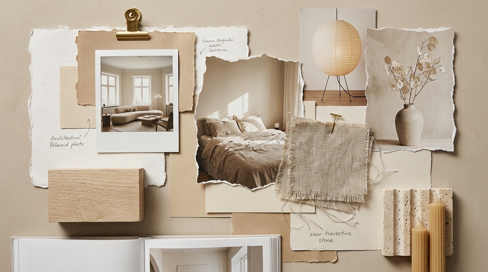

What Is Your True Interior Design Style?
Compare studio seating silhouettes, material moodboards, and ambient lighting in 60 seconds. Discover your architectural direction, personality space profile, and curated HEX paint palette.
Free • No sign-up or email required • 100% private
Which color palette makes you feel instantly at peace?
Choose the atmosphere your eyes naturally crave after a long day.
Warm Organic & Serene
The art of silence and natural imperfection

Your Space Personality: How You Truly Live
Visual calm and physical quiet. When room surfaces are uncluttered, your mind immediately drops into relaxation mode after 7 PM.
Clashing synthetic colors and plastic placeholder pieces. You would rather leave an entire room corner empty for six months than settle for cheap fast-furniture.
An innate intuition for organic materials and honest craftsmanship. You don't buy things to impress strangers; every item in your home carries a personal connection or tactile sensory joy.
Signature 5-Color HEX Paint Palette
Click any color swatch to copy the HEX code to your clipboard
Small-Space Clearance & Ergonomics Golden Rule
Maintain minimum 85 cm (33 in) primary walkways between low credenzas. In micro-studios (20–30 m²), keep floor coverage under 55% using floating wall-hung storage to prevent optical overcrowding.